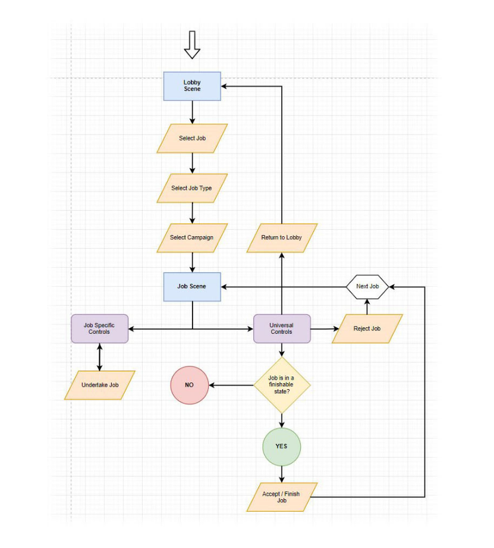

ROAMES Review
Designed For
My Role
Toolkit
BACKGROUND & OVERVIEW
Ergon Energy, one of Queensland's largest energy companies, have a problem - a big one, literally. How big? Managing and maintaining 178,000 kilometres of state-wide power lines and 1.7 million above ground power poles.
Fugro ROAMES is a technology and engineering company that specialises in high-resolution mapping services and solutions for the electricity distribution sector. They use airborne sensors to generate accurate 3D models of electric power transmission networks and the surrounding vegetation.
THE PROBLEM
Ergon Energy have to undertake campaigns yearly to monitor the condition of their power line network, to document changes and any serious regressions that could lead to a major incident. An example of this would be a damaged pole crossarm breaking, and the power line attached to it becoming free, which could lead to a major fire and endanger the lives of nearby wildlife and residents.
The difficulty is that surveyors often have to drive several hours to perform manual investigations. Their findings are manually recorded in a log book and then transfered to a computer when they get back to the office. Log books can go missing, human error can lead to incorrect recordings, such as mixing up nearby poles, and there is no simple means of a coworker verifying the site findings, which can often be highly opinionated. The process is lengthy, riddled with potential problems, and expensive, given that the process is heavily reliant on the time and expertise of veteran linesmen.
WHO IS THE USER?
Preliminary Research
As Fugro ROAMES had an estabished relationship with Ergon Energy (who previously owned ROAMES), I was fortunate in being able to reach out to Ergon's surveyors to conduct in person interviews on-site in our office. I spoke to 8 surveyors, and asked them a variety of questions related to their usual work routines and pain points.
"Quite frankly, we don't have a full overview of our network."

"We have to run 'campaigns' every year to monitor the network for changes, which can take months, and costs us millions of dollars to undertake"
"If a mistake is made or a key detail is overlooked, the consequences can be catastrophic - bushfires and potential human casualties"
"Sending surveyors to manually investigate a pole is very time consuming and can take hours. If we need to do rechecks, it's just eating up time and money"
"We need to signficantly reduce the time of our campaigns, and the expensive need to send out linesmen to do follow up checks on inconclusive network issues."
The interviews revealed several commonalities between the surveyors, such as that they are all in the same age group, use the same company issued equipment, and had similar levels of techincal expertise with different technologies. It became evident that a potential digital solution would have to be on desktops and delivered via the web, as Ergon had a lengthy IT security approval process for new software to be installed, including software updates.
I decided at this point also to start exploring personas

Throughout this process, project stakeholders had proposed the possibility of trying to divert portions of the campaign workflow that required manual work but less technical oversight to QA departments, as a cost saving measure

DESIGN
User Heuristics
The high level concept that the HPC (high performance computing) team had put together was that Roames would offer a digital solution that broke up the surveyor's inspection work into smaller segments, known as jobs, with differing levels of technical know-how required to complete them, and these jobs would be served up to users based on the level of seniority assigned to the user account.
For this project, I adapted The Nielsen-Molich heuristics from their 1990 article, “Improving a Human-Computer Dialogue” as one of many key indicators as to whether my design concepts were well founded. This was due in part to my preliminary user research, which revealed that the primary 'Power Line Surveyor' persona demonstrated limited technical efficiency, and so factors such as being able to undo errors, displaying clearly visible instructions and reducing mental fatigue and disengagement by avoiding screen clutter were crucially important design factors.
I worked with the software engineering team to come up with some quick proposals for how the workflow of these jobs might be managed, firstly by doing some Crazy 8's - A UX technique for coming up with 8 distinct ideas, spending only a minute on each. It was in this stage that I came up with the concept of a 'lobby' system, whereby a user could log into the service and find a list of open work tasks needing to be completed. This was a significant design factor, because in accomodating the secondary 'Quality Assurance Analyst' persona, it would be neccessary to restrict their available work tasks based on their qualified domain knowledge.
I then started to turn the best of the ideas into an interactive storyboard to run by the project stakeholders. At this point I pitched the name 'Roames Review', as it had an all inclusive nature for the purpose of the job types, and the business was happy to move forward with it.


Once they were happy with the general concept, I needed to work with the engineers to figure out how the workflow would look, and to gain a better understanding of how the AWS backend that they were busy working on would serve up the jobs to the front end. An important consideration I started to make at this point was how the UI design system should look, because while many of the interfaces would use job specific controls, there would also be a need for universal controls with the user's mental model in mind - a control / interface in one job should have the same behavior in another.
Testing Interactive Mockups
At this point, I did some higher fidelity mockups in Adobe XD to turn into an interactive prototype, as I wanted to do another round of testing on-site with some of the surveyors, and our internal QA team.

As soon as the surveyors saw the very first screen, I received a common and very important piece of feedback for the user experience:
'Can there be some kind of 'dark mode'? My eyes will get easily strained if I have to stare at the same bright interface all day.'


My revised 'dark' design was plauded for being easy to use, and I decided to design all of the job interfaces natively for a dark version. Initially I had considered doing both dark and light versions for each interface to give users a choice, but the value proposition didn't match the development overhead.
I wanted to keep pushing the intuitivity of the application as a whole, and decided to program a custom animation system for the project in Unity, with easily reusable, chainable components, so that every user action would have a visual feedback to help them to understand what they need to do next. You can see this in active use in the text and icon animations in this video of a job example:
DELIVERY
Ergon was extremely happy with the scope of our solution. They were able to reduce their annual campaign work down to several months saved and significantly reduced their operational costs in the process. The result was a saving of several million AUD. Fugro ROAMES was then successful at winning a tender for Essential Energy in New South Wales under very heavy competition to undertake similar work for their power network. The overall project outcome was considered a major success for Fugro ROAMES.
Fugro ROAMES also won additional contract work with Fugro's Western Australian office to implement a similar solution for the marine asset integrity projects. I was once again directly involved and designed all the interfaces and flows for the new job types, in remote consultation with their engineers.

Thanks for reading!